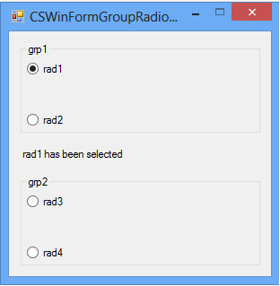

Custom RadioButton grouping in Windows Forms (CSWinFormGroupRadioButtons)
How to group the RadioButtons in the different containers (CSWinFormGroupRadioButtons)
Introduction
This sample demonstrates how to group the RadioButtons in the different containers. When you check one of the 4 RadioButtons the checked one will auto unchecked. In other words, the 4 RadioButtons are grouped together even they are in the different containers.
Running the Sample
1. Let the 4 Radiobuttons in different containers use the radioButton_CheckedChanged method to deal with their CheckedChanged event in the MainForm.Designer.cs file.
2. Use the radTmp Radiobutton to store the old RadioButton. First, set a RadioButton checked and point the radTmp to this RadioButton.
3. Uncheck the old one, and point the radTmp to the new checked RadioButton when each CheckedChanged event occurs.

Using the Code
private void radioButton_CheckedChanged(object sender, EventArgs e)
{
// uncheck the old one
radTmp.Checked = false;
radTmp = (RadioButton)sender;
// find out the checked one
if (radTmp.Checked)
{
this.lb.Text = radTmp.Name + " has been selected";
}
}
private void radioButton_CheckedChanged(object sender, EventArgs e)
{
// uncheck the old one
radTmp.Checked = false;
radTmp = (RadioButton)sender;
// find out the checked one
if (radTmp.Checked)
{
this.lb.Text = radTmp.Name + " has been selected";
}
}
More Information
1. Windows Forms General FAQ.
http://social.msdn.microsoft.com/Forums/en-US/winforms/thread/77a66f05-804e-4d58-8214-0c32d8f43191
2. Windows Forms RadioButton control
http://msdn.microsoft.com/en-us/library/f5h102xz.aspx